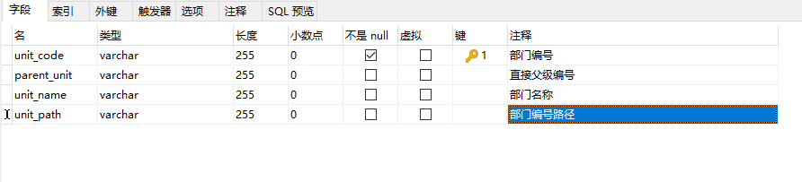

前言
最近收到了一些业务需求，写几个查询部门人员信息的接口，通过把数据放进redis里面来进行高效查询。
需求说明
我们需要将一个关系型数据库表中的数据存储在redis中。
在数据存储在redis中后，还要同时满足以下几种查询方式：
- 根据人员工号查询人员信息。
- 根据部门信息，查询部门人员信息(包括子部门的人员)
- 根据部门信息，查询部门所有的子部门信息
我们来看一下关系型数据库的这张表的结构，以及存储了哪些信息。
数据库的涉及如下(假数据，只摘取了部分)：

数据内容：
其中，部门编号和直接父级部门编号类似于id、pid表示层级关系，而unit_path部门编号路径，则存储了它的所有父级部门的信息。
如何存储
一开始我以为是很简单的操作，以人/部门为key存储数据，但是这样不能同时满足上面的三个查询条件。
于是创建了一下几个k-v数据，来实现上述的三个查询需求
用户部门信息k-v
采用redis的string数据类型，key为user_key。将一个Java中的数组存储的redis中的value中，数组的内容是**每个人所在的部门编号路径信息**。如：
1 | ["_X6003_/1/101/107/134/","_X4734_/1/101/107/131/668/","_X1385_/1/101/107/485/489/493/"] |
用户个人信息k-v
使用redis的hash数据类型，存储每个人的个人信息，其中k为user_hash，value中：field为上述k-v中数组值的某个值(某个人)，value为Java中每个人的信息对象。
如：

部门层级信息k-v
采用redis的string数据类型，key为unit。将一个Java中的数组存储的redis中的value中，数组的内容是**每个部门 的信息和部门编号路径、父部门路径**。如：
1 | [{"unitCode":"1","unitName":"根机构","unitPath":"/1/","unitType":"P"},{"parentUnit":"1","unitCode":"101","unitName":"烽火星空","unitPath":"/1/101/","unitType":"P"},{"parentUnit":"101","unitCode":"107","unitName":"组织","unitPath":"/1/101/107/","unitType":"Z"},{"parentUnit":"107","unitCode":"120","unitName":"各地研发中心","unitPath":"/1/101/107/120/","unitType":"D"}] |
如何查询
根剧用户id查用户信息
- 组合用户id成为_xxx_
- get(user_key)得到所有的用户部门信息
- 遍历上述，得到符合的个人信息的值
- 将这个值作为field去查询users_hash，得到这个field的值就是这个人的信息
例如，查询：X6003，则得到以下所有的值，模糊查的_X6003_
;将得到的_X6003_/1/101/107/134/作为users_hash的field查询，则能得到此人的准确信息。
1 | ["_X6003_/1/101/107/134/","_X4734_/1/101/107/131/668/","_X1385_/1/101/107/485/489/493/"] |
根剧部门id查用户信息
- 组合用户id成为/xxx/
- get(user_key)得到所有的用户部门信息
- 遍历上述，得到符合的部门-人员信息的值
- 将这多个值作为field去查询users_hash，得到这些field的值就是这些人的信息(因为是hash类型，redis可以直接查询多个filed)
例如，查询：101，则得到以下所有的值，模糊查的/101/
;将得到的_X6003_/1/101/107/134/,_X4734_/1/101/107/131/668/,X1385_/1/101/107/485/489/493/作为users_hash的field查询，则能得到这些人的准确信息。
1 | ["_X6003_/1/101/107/134/","_X4734_/1/101/107/131/668/","_X1385_/1/101/107/485/489/493/"] |
根据部门id查询子部门
展示一下部门信息的实体类：
1 |
|
- 查询部门层级信息得到所有部门
- 然后根据需要查询的部门id和所有部门信息对比，得到parentId=查的部门id的数据
- 上述为递归查询
- 得到子部门的所有层级数据。
1 |
|